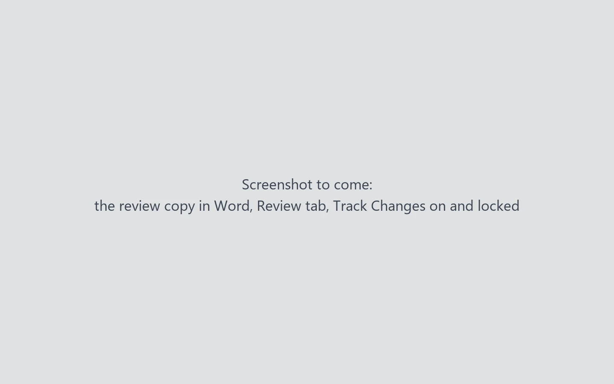
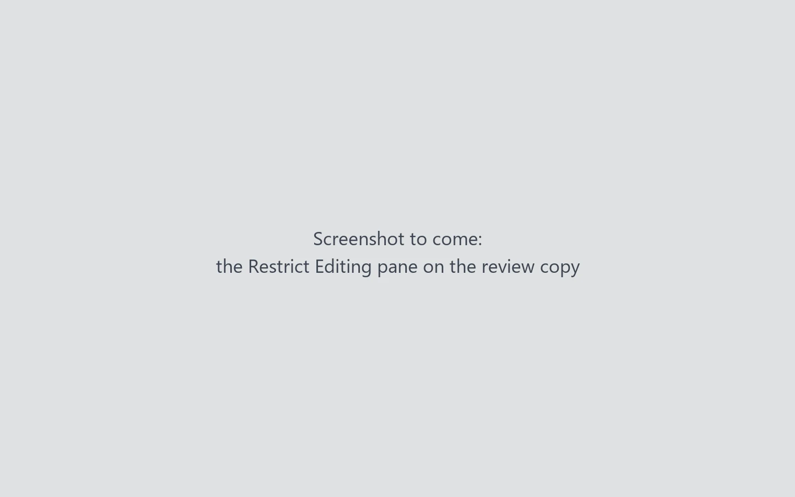
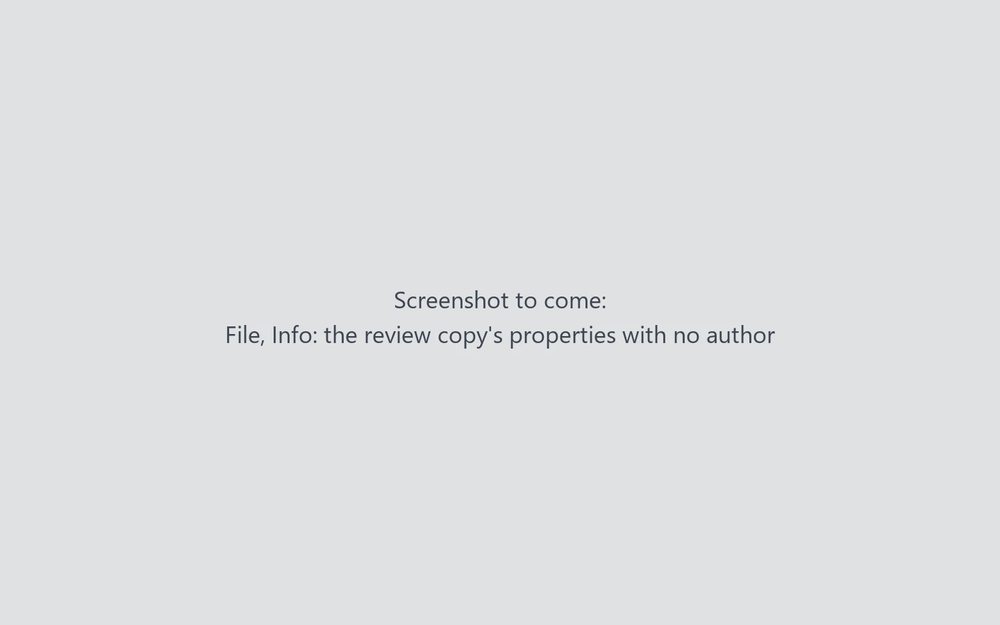
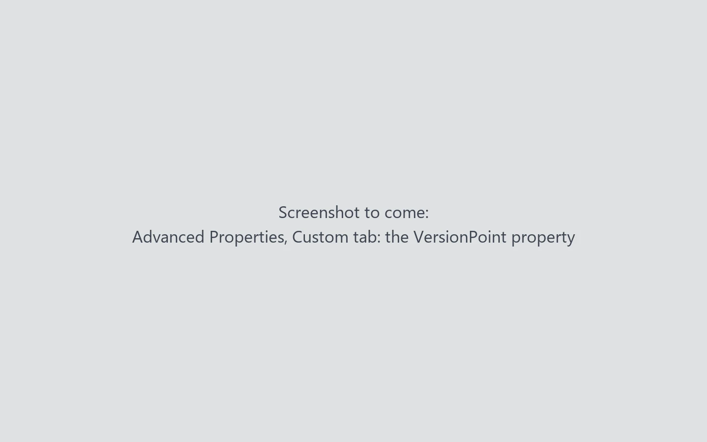
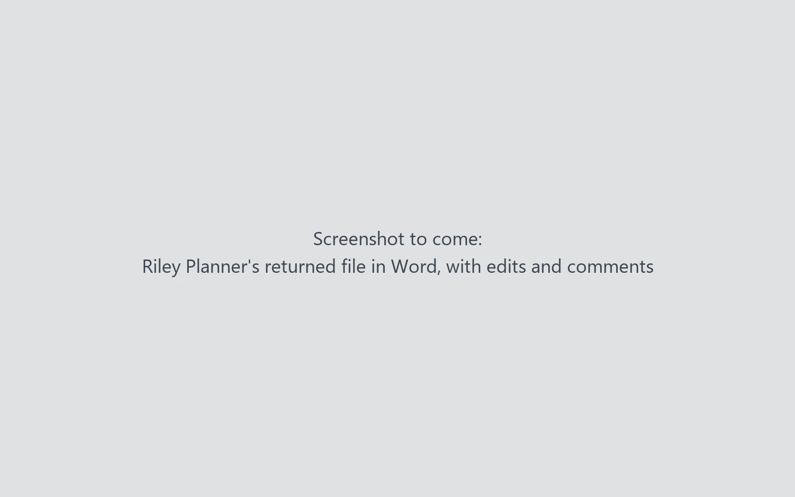

Lesson 36 minutesThe review copy, in Word
What your reviewer gets (Word)
Open the review copy the way Riley Planner will, and know what to tell a reviewer before they start.
Why it matters
Your reviewers never see VersionPoint. If you can tell them what to expect in Word, they send back a file that comes in cleanly, and you spend less time chasing edits.
Watch
How the copy travels
In your office, the review copy goes to the reviewer as an attachment to your own email, and the reviewer sends the same file back the same way. VersionPoint never emails anyone. All it needs is the file that comes back.
In this course there's no one to email, so the reviewer's desk plays the reviewer. You give it the copy you downloaded, it makes Riley Planner's edits and margin notes on it the way Word would, and you download Riley's returned file. Everything happens in your browser.
- The reviewer's desk: plays the reviewer on a copy you downloaded.
The copy, opened in Word


The lock has a password, but nobody has it. VersionPoint makes a random one for each copy and doesn't keep it. That's on purpose: no one can switch tracking off and fix things quietly.


What the reviewer does
- Edits as usual. Every edit is tracked in their name.
- Adds comments in the margin, and replies to other people's comments.
- Saves, and sends the same file back. The name can stay as it is.
Try it
- Open the review copy you kept in lesson 2, Lake Shuttle news release - for Riley Planner - round 1.docx, in Word.
- Choose the Review tab. Track Changes is on, and Word won't let you switch it off.
- Choose Restrict Editing on the Review tab. The pane says the document only allows tracked changes. Don't choose Stop Protection: it asks for a password nobody has.
- Look through the margin and the text. There are no comments and no tracked changes.
- Choose File, then Info. Under Properties, there's no author and no Last Modified By name.
- Close the copy without saving it. Leave it as VersionPoint made it.
- Open the reviewer's desk from the practice files above. Leave Reviewer on Work it out from the file name.
- Choose Choose the copy you downloaded, then choose the review copy. The desk says Riley Planner sent it back and lists what Riley did.
- Choose Download the returned file. It has the same name as the copy, so your browser may add a number to it. The newest file is Riley's.
- Open Riley's returned file in Word. Riley's edits are tracked in Riley's name, with three comments in the margin and Drew Grants's reply on the grant name. Close it without saving, and keep it for lesson 4.
Check your work
![The reviewer's desk after the copy was chosen. Callout 1 marks Reviewer, set to Work it out from the file name. Callout 2 marks the box Choose the copy you downloaded, or drop it here. Callout 3 marks the green result: Riley Planner sent it back (Riverton Transit Authority, for lesson 4). What they did, with six items: every 30 minutes changed to every 20 minutes with Track Changes; September 28 changed to September 27 with Track Changes off; up to 48 riders changed to up to 40 riders with a note; and room for two bicycles deleted with a note; The grant pays for the shuttle through [insert year]. added; a note on Clean Commute Grant with a reply from Drew Grants. Callout 4 marks the Download the returned file button.](assets/l3-desk-a.webp)
- Reviewer: leave it on Work it out from the file name. The desk reads for Riley Planner in the name.
- Choose the copy you downloaded, or drop the file on the box.
- Riley Planner sent it back, with a list of what Riley did. One edit was made with Track Changes off; lesson 4 shows how VersionPoint still finds it.
- Download the returned file saves Riley's file under the same name as the copy.

Watch out for
Quick check
Pick an answer to see why it is or isn't right. Nothing is scored or sent anywhere.
Question 1
Riley asks how to turn Track Changes off to clean up a messy paragraph. What do you say?
Question 2
Will the next reviewer see Riley's comments from round 1?
Question 3
Your subject matter expert asks how to send their edits back. What do you tell them?
Lesson 4 brings Riley's returned file back into VersionPoint.